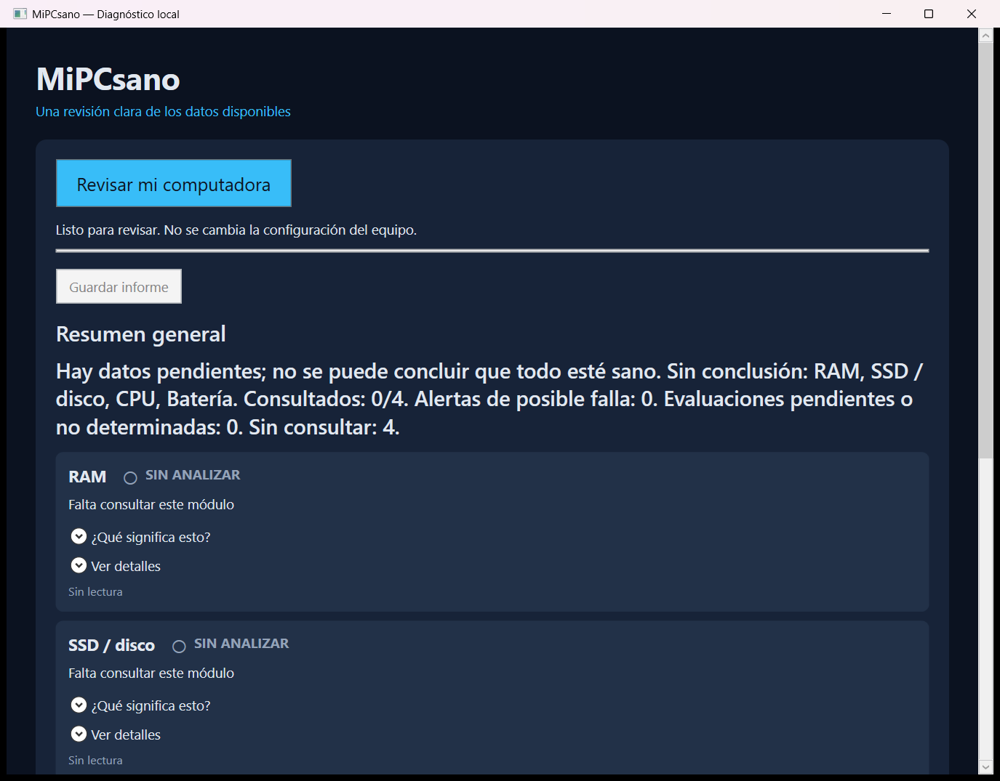

Memoria RAM
Capacidad utilizable, memoria disponible y uso actual. Consulta el inventario y la última prueba de memoria registrada en Windows, cuando están disponibles.
El uso normal no confirma la integridad física de la RAM.
Versión betaUna primera orientación
MiPCsano revisa los indicadores disponibles de RAM, procesador, almacenamiento y batería. Te explica los resultados con palabras claras y te orienta sobre qué conviene revisar.
Solo para Windows de 64 bits (x64)
Descarga del instalador desde GitHub. Lee los requisitos antes de instalar.
No está disponible para macOS, Linux, Android ni iPhone.
Windows 11 x64: 24H2, 25H2 y 26H1; 23H2 únicamente en Enterprise/Education, mientras mantenga soporte.
Windows 10 x64: solo las ediciones LTSC/Enterprise compatibles con .NET 10 (21H2, 1809 y 1607), según su ciclo de soporte. No se anuncia compatibilidad general con Windows 10 Home/Pro.
Estas versiones corresponden a la plataforma .NET 10. MiPCsano se ha probado en Windows 11 25H2 x64; las demás versiones y ediciones requieren validación de esta beta.
Necesita PowerShell de Windows y los proveedores de información del sistema disponibles. Algunas lecturas dependen del firmware, los controladores y los permisos. No necesitas instalar .NET ni el SDK por separado.
Consultar las versiones admitidas por MicrosoftCompatibilidad de la plataforma consultada el 9 de octubre de 2026.
Cuatro componentes
Una mirada a lo que el equipo informa. Los datos ausentes se muestran como tales.
Capacidad utilizable, memoria disponible y uso actual. Consulta el inventario y la última prueba de memoria registrada en Windows, cuando están disponibles.
El uso normal no confirma la integridad física de la RAM.
Carga puntual, núcleos y frecuencias reportadas por Windows o el firmware.
Las frecuencias no son una medición de la velocidad máxima real. No mide temperatura ni ejecuta pruebas de estrés.
Espacio libre y los indicadores de salud, desgaste o errores que el dispositivo permita consultar.
Un indicador normal no equivale a una prueba completa del disco ni descarta fallas futuras.
Carga restante y capacidades reportadas. Estima desgaste solo cuando los datos se pueden comparar.
No comprueba el cargador. Si tu computadora no tiene batería, su ausencia no se considera una falla.
De la consulta a la orientación
Abre MiPCsano-Setup.exe y sigue el asistente. Puedes elegir un acceso directo en el escritorio; también encontrarás la aplicación en Inicio.
Pulsa “Revisar mi computadora”. La aplicación muestra qué componente está consultando mientras completa la revisión.
Lee el resumen y las tarjetas. Abre “¿Qué significa esto?” o “Ver detalles”, y guarda un informe si quieres conservarlo.
Color, icono y texto
Un estado resume los indicadores consultados. No es una certificación de que todo esté sano.
No se observaron alertas en los indicadores disponibles. Esto no descarta todas las fallas.
Hay un indicador, un síntoma o información incompleta que necesita más contexto.
Existe una advertencia o evidencia que conviene revisar. No identifica por sí sola la causa.
La consulta se intentó, pero no hay información suficiente para llegar a una conclusión.
Sin analizar: todavía no se ha consultado ese componente. Es distinto de “no determinado”.
Así se ve
Resumen, explicaciones y detalles en el mismo lugar.

Una herramienta en desarrollo
MiPCsano está pensado para personas que no están familiarizadas con los aspectos técnicos de su computadora y necesitan una primera orientación sobre su estado.
Sus resultados se basan en los datos disponibles del equipo. No detecta todas las fallas ni sustituye las pruebas específicas o la revisión de un técnico.
Esta versión beta continúa en desarrollo. Se incorporarán mejoras de claridad, compatibilidad y diagnóstico conforme se prueben y validen.